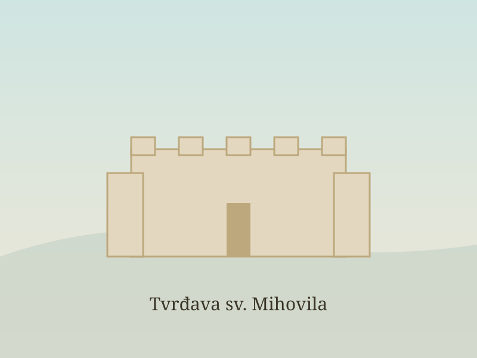
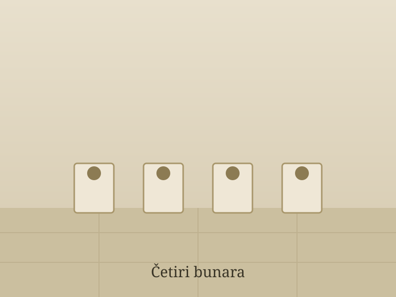
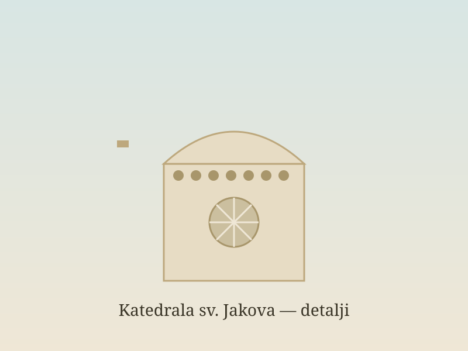
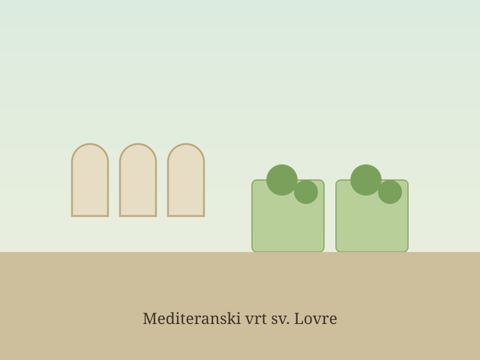
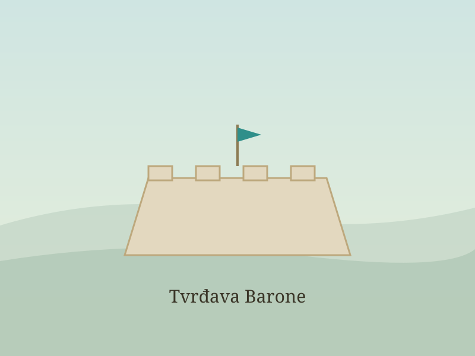
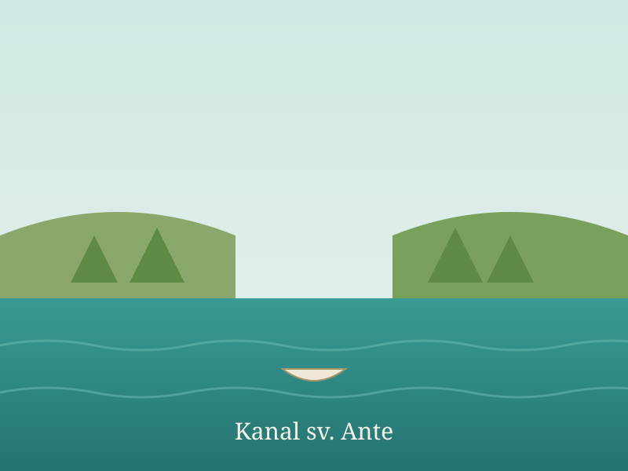

Vodič kroz grad Šibenik
Otkrijte skrivena mjesta Šibenika
Tvrđave, samostanski vrtovi i šetnice uz more koje turisti često preskoče. Svaka lokacija dolazi s provjerenim činjenicama i poveznicom na kartu.
Pošalji upitLokacije
Filtrirajte po kategoriji ili pretražite po nazivu.
-

PovijestTvrđava sv. Mihovila
Srednjovjekovna utvrda na brijegu iznad starog grada koja se danas koristi kao ljetna pozornica na otvorenom.
- Najstariji sačuvani fortifikacijski sklop u gradu.
- Obnovljena i otvorena kao prostor za koncerte i predstave.
-

PovijestGradski bunari (Četiri bunara)
Povijesni vodospremnik s nizom kamenih bunarskih grla koji je gradu osiguravao zalihe pitke vode.
- Sklop je izgrađen kao spremnik za vodu u 15. stoljeću.
- Smješten je uz nekadašnji ulaz u grad, blizu tržnice.
-

KulturaKatedrala sv. Jakova — detalji
Kamena katedrala na UNESCO-ovu popisu, poznata po frizu s nizom isklesanih ljudskih glava na vanjskim zidovima apsida.
- Gradnja je trajala od 1431. do 1535. godine.
- Na popisu svjetske baštine UNESCO-a od 2000. godine.
-

KulturaMediteranski vrt sv. Lovre
Obnovljeni samostanski vrt uređen po uzoru na srednjovjekovne mediteranske vrtove, s ljekovitim i začinskim biljem.
- Smješten je uz samostan sv. Lovre u starom gradu.
- Uređen je s gredicama bilja i nadsvođenim trijemom.
-

PrirodaTvrđava Barone
Utvrda iz 17. stoljeća na brežuljku koja pruža otvoren pogled na grad, kanal i okolni krajolik.
- Sagrađena 1646. godine za obranu grada.
- Vidikovac s panoramom grada i zaleđa.
-

PrirodaKanal sv. Ante
Zaštićeni krajobraz na morskom ulazu u luku, s uređenom šetnicom uz obalu obraslu mediteranskim raslinjem.
- Proglašen zaštićenim krajobrazom zbog prirodnih vrijednosti.
- Uz kanal vodi uređena pješačka šetnica.
Nijedna lokacija ne odgovara pretrazi.
Pošaljite upit
Imate pitanje o lokacijama ili prijedlog? Javite nam se.
Izvori i zahvale
Sve slike na stranici su izvorne, ilustrativne SVG grafike izrađene za
ovaj projekt (nisu fotografije stvarnih lokacija). Činjenice o lokacijama
temelje se na izvorima navedenima u dokumentu research-brief.md.
- Wikipedija — natuknice o pojedinim lokacijama u Šibeniku.
- Turistička zajednica grada Šibenika (sibenik-tourism.hr).
- UNESCO — popis svjetske baštine (whc.unesco.org).
- Hrvatska enciklopedija (Leksikografski zavod Miroslav Krleža).
Potpuna anotirana bibliografija s poveznicama nalazi se u research-brief.md.